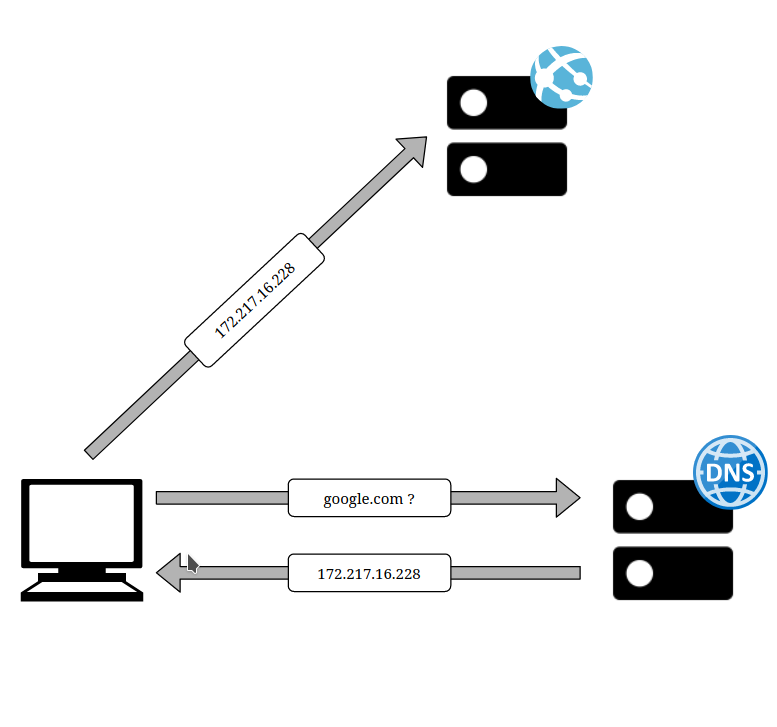

Tidy Bits
The blog where I tell my geek adventures
Cuando el DNS miente:
La censura en Internet y cómo detectarla.
Hoy vamos a hablar de uno de los métodos más sencillos que usan algunos estados para censurar páginas web en Internet. Se trata del DNS Hijacking o bloqueo DNS, pero para entenderlo primero vamos a contar un poco qué es eso del DNS y por qué es tan importante para nuestra experiencia en Internet.
DNS
Cuando queremos acceder a una web, por ejemplo google.com, nuestro ordenador pregunta a unos servidores de Internet llamados Servidores de Nombres de Dominio (Domain Name Servers o DNS) por la dirección de esa página web. Una vez la ha conseguido, nuestro ordenador realiza una petición a esa dirección IP para obtener la página web que buscábamos.

¿Cómo sabemos qué servidores DNS usar? Lo más común es que cuando nos conectemos a nuestro router de casa, éste nos sugiera un par de direciones de servidores DNS que suelen ser por defecto los DNS gestionados por nuestro proveedor de servicio1. Por ejemplo, si tenéis Movistar en casa, el router os habrá sugerido 80.58.61.250 y 80.58.61.250 como DNS.
Como os podéis imaginar, los DNS son una parte fundamental de nuestra experiencia en Internet ya que sin ellos somos incapaces de saber la dirección real de las páginas a las que accedemos. Son básicamente el listín telefónico de Internet y en su ausencia estaríamos totalmente a oscuras y no sabríamos cómo llegar a los sitios web que frecuentamos día tras día. Algunos estados se aprovechan de esta dependencia tan crítica para censurar webs obligando a los ISPs a que no nos contesten cuando preguntamos por esas páginas bloqueadas o para que nos respondan con direcciones erróneas.
Este método es sencillo de aplicar puesto que sólo es necesario convencer a los ISPs para que modifiquen las entradas en sus servidores DNS, pero en contraposición es efectivo sólo para los clientes que hacen uso de esos servidores. Algunos usuarios más experimentados cambian los DNS que se configuran por defecto por servidores de otros proveedores menos proclives a ser modificados como Google, Cloudflare o OpenDNS.
Existen diversas maneras de detectar este tipo de bloqueos. Al ser herramientas en uso por entidades gubernamentales, muchos estados ofrecen formularios online donde puedes revisar si tu dominio ha sido bloqueado. Ésta web, por ejemplo, permite comprobar si el gobierno turco ha bloqueado tu dominio.
También existen organizaciones como el Open Observatory of Network Interference, la Electronic Frontier Foundation o NetBlocksque ofrecen consejos o directamente aplicaciones para detectar técnicas de censura digital. Una práctica común para descubrir el bloqueo DNS consiste en realizar peticiones a distintos servidores y comprobar si todos devuelven las mismas direcciones. Si muchos de ellos muestran direcciones distintas es probable que esa página web haya sido censurada.
Detectando DNS Hijacking
En la actualidad esta técnica de detección suele funcionar sólo cuando se realiza dentro del país donde se quiere comprobar la censura. No se recomienda permitir que clientes de otras redes externas a un servidor DNS puedan realizar resoluciones de nombres para evitar un tipo específico de DDoS llamados reflection attacks2 por lo que muchos de ellos filtran las peticiones entrantes y sólo contestan aquellas que provienen de redes autorizadas.
Lo primero que tenemos que hacer es conseguir una lista de servidores DNS por país. Hay varias opciones para obtenerla, una de ellas puede ser escanear todo el espacio de direcciones de internet en busca de equipos que respondan en el puerto 53 pero nosotros vamos a elegir una opción menos invasiva. Usaremos la base de datos de nuestro RIR3. Los RIRs registran traducciones de IP a dominio (Reverse delegations), y en esos registros también guardan direcciones de servidores DNS, normalmente servidores que pertenecen a las entidades administradoras de los distintos Sistemas Autónomos.
Descargarse todos los objetos domain del RIPE es sencillo. Una vez con esa información en nuestro poder extraemos de ella una lista de servidores DNS, y cotejamos sus direcciones IP con la base de datos de MaxMind para descubrir dónde se encuentran geográficamente. El resultado de este proceso es un archivo con objetos json como el siguiente:
{
"as_num": 13182,
"as_org": "Made Network Srl",
"as_descr": "Rimini, Italy",
"domain": "authns1.xtsystem.it",
"addr": "213.152.201.100",
"continent": "Europe",
"country_name": "Italy",
"reg_country_name": "Italy",
"country_iso": "IT",
"reg_country_iso": "IT",
"city": "Rimini",
"postal_code": "47923",
"lat": 44.0575,
"lon": 12.5653,
"time_zone": "Europe/Rome",
}
Para comprobar de forma sencilla si somos capaces de detectar que una web tiene un comportamiento extraño dentro de un país hemos escrito un pequeño script que realiza resoluciones DNS de los servidores de la lista que hemos extraído por país: geo-dig. Comprobemos los resultados de una web bloqueada en Turquía como puede ser pornhub, con una web que actualmente no está bloqueada como es Wikipedia.
$ ./geo-dig.py --country "TR" --target pornhub.com
931 servers found at TR
30 servers returned the following addresses
66.254.114.41
21 servers returned the following addresses
195.175.254.2
2 servers returned the following addresses
208.91.112.55
2 servers returned the following addresses
185.50.70.10
2 servers returned the following addresses
185.152.91.1
185.152.91.2
874 servers did not answer
$ ./geo-dig.py --country "TR" --target Wikipedia.org
931 servers found at TR
2 servers returned the following addresses
208.91.112.55
2 servers returned the following addresses
185.152.91.1
185.152.91.2
53 servers returned the following addresses
91.198.174.192
2 servers returned the following addresses
185.50.70.10
872 servers did not answer
A simple vista nuestra herramienta no parece arrojarnos un resultado categórico para juzgar si una web u otra está bloqueada. Como hemos comentado anteriormente, el estado se ocupará especialmente de que los grandes proveedores de Internet de su país modifiquen sus entradas DNS, pero no perderá tiempo con pequeños proveedores o empresas particulares. Sin embargo, si nos fijamos con más atención vemos que mientras que en el caso de Wikipedia parece haber un consenso mayoritario en torno a la dirección 91.198.174.192, con pornhub4 hay discrepancias en torno a dos direcciones IPs: 66.254.114.41 y 195.175.254.2.
¿Cómo saber cuál es la página web real y cuál no? Una manera es comprobar que puedan finalizar una conexión TLS. Las entidades certificadoras sólo habrán extendido un certificado utilizable a la verdadera web y no al servidor que está secuestrando el dominio. Si probamos con la primera dirección podemos verificar que cuenta con un certificado expedido para el dominio y todos sus subdominios mientras que la segunda dirección no consigue finalizar la negociación:
$ openssl s_client -connect 66.254.114.41:443 -servername pornhub.com 2>&1 | grep "^subject"
subject=C = CY, L = Dali, O = MG FREESITES II LTD, CN = *.pornhub.com
$ openssl s_client -connect 195.175.254.2:443 -servername pornhub.com
CONNECTED(00000003)
Si queremos más pruebas podemos cargar la página en texto plano en vez de en https. El título del documento que nos devuelve es “Autoridad de Tecnologías de la Información y Comunicación”, claramente no el que nos esperaríamos de la web a la que estábamos intentando acceder.
$ curl --silent --header "Host: pornhub.com" http://195.175.254.2 | grep "title"
<title>Bilgi Teknolojileri ve İletişim Kurumu</title>
Referencias
- Un Proveedor de Servicio o ISP es la empresa que te ofrece la conexión a Internet. Movistar, Orange o Virgin Media son ISPs.
- Un ataque de reflexión o reflection attack es un tipo de ataque de denegación de servicio en el que un usuario malicioso envía una petición modificada a un servicio externo de tal forma que la respuesta no le llegue a él si no que sea enviada al equipo que se desea atacar.
- Un RIR (Regional Internet Registry) se ocupa de asignar y registrar los recursos de Internet (Direcciones IP, etc) dentro de una región específica.
- Elegir pornhub para este ejemplo era una apuesta segura ya que la pornografía es una de las temáticas censuradas en Turquía junto con el juego, las drogas o las ofensas a Atatürk entre otras por medio de la ley 5651.